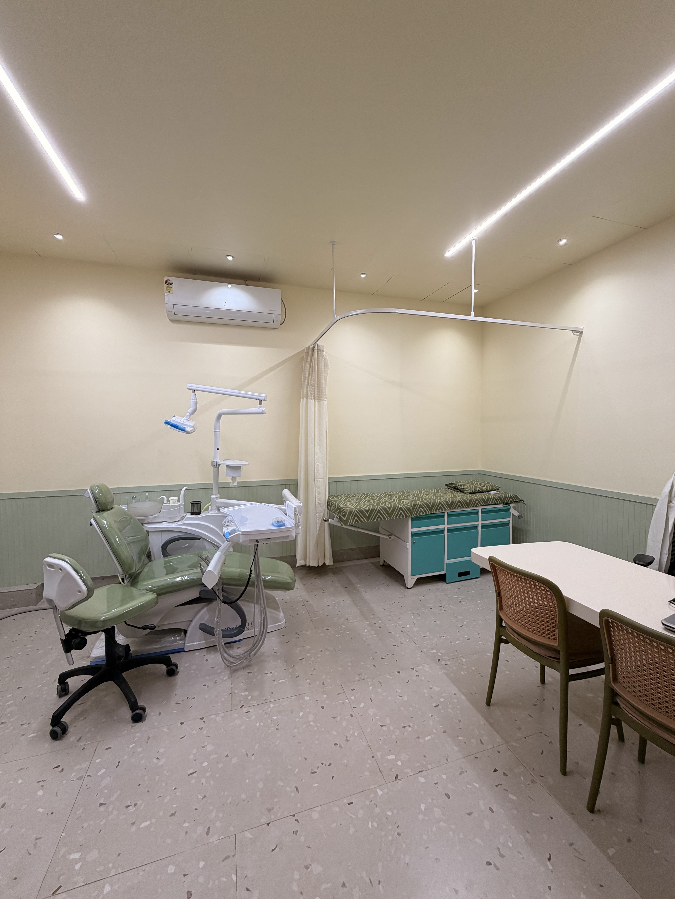
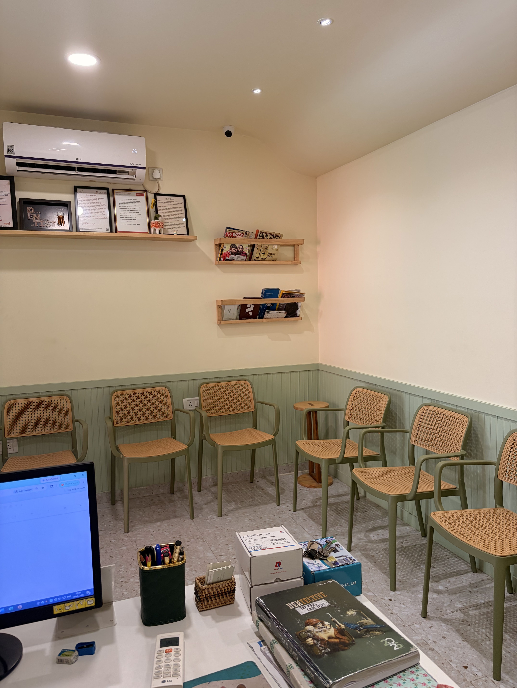

Preventive & General Care
Thorough check-ups, gentle scaling and polishing, and preventive dentistry for adults and children.
Explore preventive careUnhurried, compassionate dental care in Austin Nagar, Teynampet. Every condition, option, and step is explained with calm clarity before treatment begins.


Thorough check-ups, gentle scaling and polishing, and preventive dentistry for adults and children.
Explore preventive carePainless root canal protocols, tooth-colored fillings, and natural-looking ceramic crowns and bridges.
Explore restorative carePredictable dental implantology and calm wisdom tooth extractions with structured post-care follow-ups.
Explore surgical careConservative teeth gap closures, alignment options, and brightening tailored to natural facial proportions.
Explore smile designWhether closing a front midline gap, aligning crowded teeth, or gently brightening enamel, Dr. Sowmya plans each smile enhancement around long-term tooth health—never an artificial, over-processed look.
“After my first check she explained the condition and my options very patiently.”
Graduating from Ragas Dental College & Hospital in 2012, Dr. Sowmya S. brings over a decade of clinical experience in general dentistry, smile designing, gap closures, and implantology. Patients regularly describe her approach as calm, transparent, and genuinely attentive.
“I visited Dr. Sowmya’s Dental Care after seeing an Instagram reels. The staff gave us a warm welcome. Before going, I went with a lot of doubts. But after speaking with Dr. Sowmya mam, I gained a lot of confidence. She was so patient…”
“I would like to sincerely thank Dr. Soumya for the excellent care and confidence she gave me throughout my dental treatment journey. Before starting treatment, I consulted several doctors and received different opinions and treatment plans…”
“I had a great experience at Dr. Sowmya’s Dental Care. Dr. Sowmya is very professional, gentle, and attentive. She explained everything clearly and made the treatment completely painless. My tooth feels perfect now — no pain and looks great!”
Swipe through patient journeys, smile transformations, and helpful dental care clips straight from our clinic community.